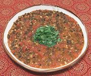

|
Urad Beans with TomatoIndia - Sabut Urad Lajawab | ||||
| Serves: Effort: Sched: DoAhead: |
4 w/rice ** 7-1/2 hrs Yes |
This mild but very tasty recipe is a fine wet accompaniment to a dry dish such as Masala Potatoes or serve it alone with rice or bread as a vegetarian main dish. | |||
|
1/2 1/4 1/2 2 1-1/2 ------- 1/2 1 2 1/2 ------- 4 1/4 1/4 ------- 1 1 1/2 1 |
c t t c # --- t t t --- cl in t --- t T T T |
Urad Beans (1) Turmeric Salt Water Tomatoes, ripe -- Spices Cumin seeds Coriander seeds Chili, dry red (2) Salt -- Aromatics Garlic Ginger Root Garam Masala (3) ------- Fenugreek Leaf (4) Butter Lime Juice Oil (ghee) |
Do-Ahead - (7 hrs - 5 min work)
|